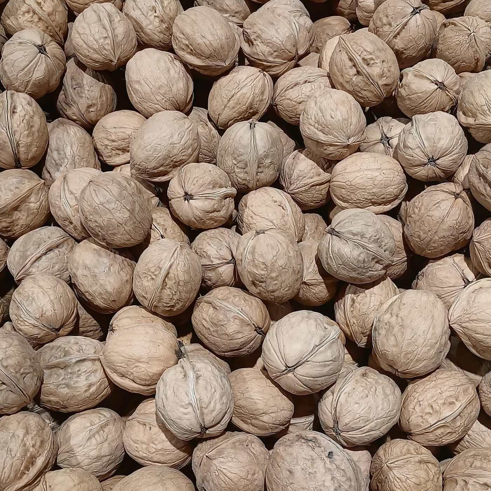

差し込み口
鉛筆の先を入れる、円すい形にくぼんだ穴。
店のこと
このページでは、確認できた所在地とInstagramのご案内だけを載せています。お店の考え方・メニュー・設備などは、情報をいただいてから書き換えます。


制作側の連想
鉛筆削り器は「差し込み口」「刃」「ハンドル」「削りくず受け」「本体ケース」「固定つまみ」の六つの部位でできている、と仮に分けました。制作側の連想で、お店の理念・由来とは無関係です。
鉛筆の先を入れる、円すい形にくぼんだ穴。
差し込んだ鉛筆の木を薄く削る、斜めに取り付けた小さな金属の板。
回して使う場合に握る、クランク状の取っ手。
削ったくずがたまる、取り外せる小さな容器。
刃や部品をまとめて包む、外側の箱状の殻。
机の縁などに本体を固定するための、ねじ式のつまみ。
写真(イメージ)



写真はイメージです。お店のものではありません。
ご案内
| 所在地 | 〒410-3511 静岡県賀茂郡西伊豆町大沢里１０６５−１ |
|---|---|
| 電話 | 準備中 |
| 営業時間 | 準備中 |
| 定休日 | 準備中 |
| ご予約 | 準備中 |
| 駐車場 | 準備中 |
| SNS | Instagram @morinocafe_littleheart |